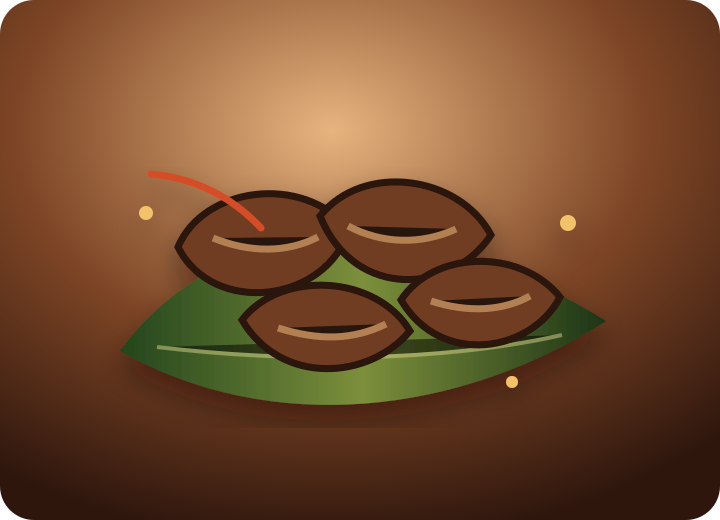
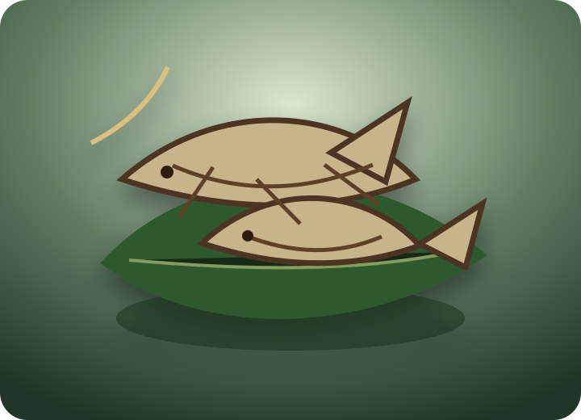

Pickles / Oorugai
Chicken, Mutton, Beef, Prawn, Squid Kanava and Fish Pickle made for bold South Indian meals.
உலர் சுவை • The Essence of Dry
From spicy Chicken Oorugai and coastal Karuvadu to village-style Uppukandam, Karuppatti and Panangarkandu, UlarSuvai brings preserved tradition to today’s family table.
Premium product banner: Oorugai, Karuvadu, Uppukandam, Karuppatti and Panangarkandu shown together with banana leaf and rustic Tamil kitchen styling.
Featured Product Categories
Chicken, Mutton, Beef, Prawn, Squid Kanava and Fish Pickle made for bold South Indian meals.
Karuppatti palm jaggery and Panangarkandu palm candy rooted in Tamil household wellness traditions.
Mutton Uppukandam and Beef Uppukandam for deep, preserved, village-style flavor.
Traditional dry fish and dried seafood selected for coastal Tamil cooking memories.
Why UlarSuvai
Every description, product grouping and ordering path is built around real Tamil food vocabulary: Oorugai, Karuvadu, Uppukandam, Karuppatti and Panangarkandu.
The design pairs rustic earth tones, bronze logo treatments and modern spacing so the brand feels heritage-rich without looking old-fashioned.
No confusing cart. Customers can speak directly through WhatsApp, phone or email to confirm availability, quantity and delivery details.
Our Products • எங்கள் பொருட்கள்
Pickles / Oorugai
UlarSuvai Pickles, also known as Oorugai, are crafted for customers searching for Chicken Pickle, Mutton Pickle, Beef Pickle, Prawn Pickle, Squid Pickle, Kanava Oorugai and Fish Pickle. Each product story leans into Tamil spice memory, oil-rich preservation, and the joy of pairing oorugai with hot rice, dosa, idli and curd rice.
Panai Porul
Panai Porul celebrates palm-based Tamil ingredients. Karuppatti, known as Palm Jaggery, brings a deep caramel sweetness to coffee, sweets and traditional home remedies. Panangarkandu, known as Palm Candy, is loved for gentle sweetness and heritage value in Tamil homes.

Uppukandam / Dry Meat
Uppukandam is dry meat with a preserved, concentrated flavor profile. UlarSuvai highlights Mutton Uppukandam and Beef Uppukandam for customers looking for traditional dry meat, village-style meat preservation and intense curry-ready taste.

Karuvadu / Dry Fish
Karuvadu is traditional dry fish, dried seafood and a core memory in many South Indian kitchens. UlarSuvai presents all types of dry fish for customers searching for Karuvadu, Dry Fish, Traditional Dry Fish and Dried Seafood.
About UlarSuvai
UlarSuvai was shaped around a simple promise: make traditional South Indian dry foods feel trustworthy, premium and easy to order. In Tamil homes, dry and preserved foods are not backup items; they are flavor anchors. A spoon of Oorugai can complete a meal. A piece of Karuvadu can define a curry. Karuppatti can sweeten a drink with heritage. Uppukandam can bring deep village flavor to the table.
Our brand language blends Tamil and English so families, new customers and longtime Tamil food lovers understand the same truth: UlarSuvai is for authentic homemade-style South Indian dry foods, presented with modern care.
Traditional Heritage
Visual direction uses banana leaf greens, earthen browns and brass golds to echo Tamil feasts and village kitchens.
Drying, pickling and palm sweetness are time-tested food traditions that improve shelf confidence and deepen taste.
Every item is named with the Tamil word families already used at home, so customers instantly know what they are ordering.
Why Choose Us
How To Order
Review Oorugai, Panai Porul, Uppukandam and Karuvadu categories.
Message on WhatsApp, call +91 80720 09245 or email ularsuvai@gmail.com.
Share item names, quantity, delivery location and preferred contact method.
UlarSuvai confirms details and guides you through delivery options.
Contact UlarSuvai
For orders, product availability, bulk enquiries or social media collaboration, contact UlarSuvai directly.
FAQ for Customers
UlarSuvai is a premium traditional South Indian dry food brand focused on Oorugai pickles, Karuvadu dry fish, Uppukandam dry meat, Karuppatti palm jaggery and Panangarkandu palm candy.
No. Orders are intentionally direct through WhatsApp, phone call and email so customers can confirm product availability and delivery details with a real person.
Chicken Pickle, Mutton Pickle, Beef Pickle, Prawn Pickle, Squid Pickle or Kanava Oorugai, and Fish Pickle are included in the UlarSuvai product structure.